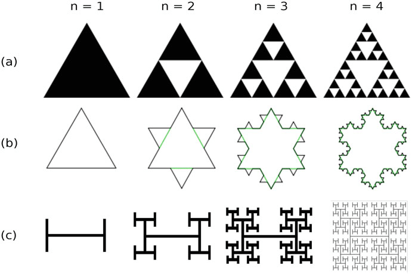
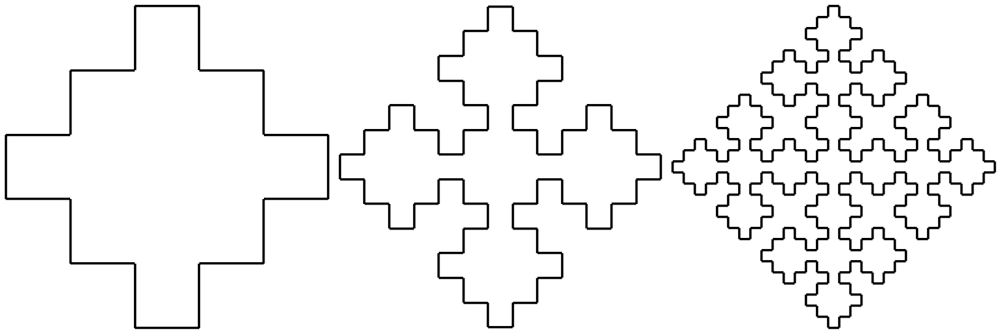

Fractals are shapes with structures at any arbitrarily small scale.

They may have special properties like having infinite perimeter but finite enclosed area.

Thus, it does not quite make sense to categorize them as integer-dimensional.
The Hausdorff dimension is a way to characterize the dimension of a fractal.
For simple fractals, one can define it as log(S)/log(N) where S is the scale of repeating objects and N is the number of repeating objects.
Fractals in the Wild
Fractals can occur in unexpected places. Some call the coastline of England a fractal.
Coloring the even values of Pascal's triangle also produces a fractal (Sierpinski's triangle).
In complex analysis, the Mandelbrot set is defined as places where f_c(z) =z^2 + c does not diverge when iterated infinitely from z = 0.